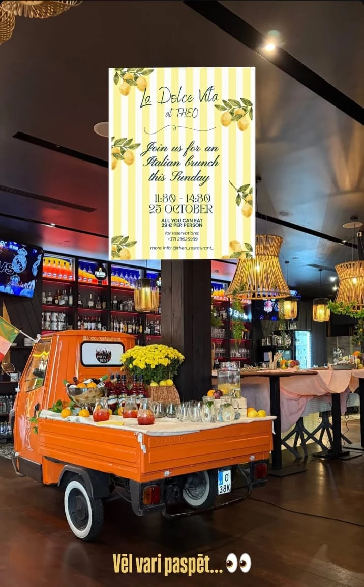

Eggs Benedict
Brioche, wilted spinach, avocado & hollandaise.
meet me at THEO
FOOD · COCKTAILS · MUSIC · PEOPLE
From the first coffee to the last song. The heart of Old Riga has a new rhythm.

Step off the cobbled streets of Vecrīga, find your people, and stay a little longer. Think glowing bulbs, generous plates, long conversations and music in the air.
From slow morning breakfasts to late-night tunes, THEO is made for unexpected plans and unforgettable catch-ups.
TAKE A LOOK AROUND ↗The plates are cleared, the music gets louder and the evening is only getting started. Live music, DJs and that unmistakable Old Riga energy.
SEE WHAT'S ON ↗Check Instagram for the current lineup and event times.Right in the heart of Old Riga, where every good evening begins.